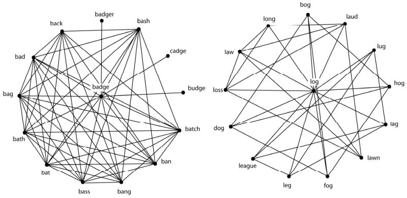

Chapter 7 Chapter 7: Micro-level network measures
Micro-level network measures provide you with information about specific nodes in the network. These are generally known as centrality measures in the network science literature. Centrality is the network scientist’s way of quantifying the relative “importance” of a given node relative to other nodes in the network. There are many different definitions of what counts as “central”, as you will see in the following subsections, and also from this Periodic Table of Centrality Indices. There is no single “correct” or “best” metric - which metrics are most useful to you will depend on the nature of the system that you are modeling as well as the network behavior that you interested in.
To facilitate the demonstrations below, we will use the directed, weighted karate network that we have previously seen in Chapter 4. In the rest of the chapter we will compute various micro-level network measures for the nodes in this network.
karate_el <- read.csv('data/karate_el_weights.csv', header = TRUE)
karate_dw <- graph_from_data_frame(karate_el, directed = TRUE)
summary(karate_dw)## IGRAPH b50ae13 DNW- 34 78 --
## + attr: name (v/c), weight (e/n)7.1 Degree
The degree of node i, frequently denoted as k_i in the network science literature, refers to the number of edges or links directly connected to node i.
To get the degree of all nodes in the network, try running the following code:
## Mr Hi Actor 2 Actor 3 Actor 4 Actor 5 Actor 6 Actor 7 Actor 9 Actor 10 Actor 14 Actor 15 Actor 16 Actor 19 Actor 20 Actor 21 Actor 23 Actor 24 Actor 25 Actor 26 Actor 27 Actor 28 Actor 29 Actor 30 Actor 31
## 16 9 10 6 3 4 4 5 2 5 2 2 2 3 2 2 5 3 3 2 4 3 4 4
## Actor 32 Actor 33 Actor 8 Actor 11 Actor 12 Actor 13 Actor 18 Actor 22 Actor 17 John A
## 6 12 4 3 1 2 2 2 2 17If you only want the degree for a specific node:
## Mr Hi
## 16## Mr Hi Actor 5
## 16 3It would be better to “save” the outputs as an object (especially if your network is very large!) so that you can manipulate or export it later.
Notice that you have a named vector called karate_degree in your Environment.
7.1.1 In-, out-, all-degree
If your network has directed edges, in-degree refers to the number of edges that are going towards the target node, whereas out-degree refers to the number of edges that are going away from the target node. all-degree is the sum of in-degree and out-degree, and is the same as degree.

To get the in- or out-degree of a node, we need to include the mode = 'in' or mode = 'out' argument accordingly.
## Actor 5
## 1## Actor 5
## 2Notice that Actor 5 has an in-degree of 1 and out-degree of 2, and in the previous section we saw that Actor 5 had a degree of 3. If no arguments are specified, igraph will compute all-degree, which is the sum of a node’s in- and out-degree, by default for directed graphs. Keep this in mind!
## Actor 5
## 3## Actor 5
## 3## Actor 5
## 37.2 Strength
The strength of node i refers to the sum of its adjacent edge weights. This measure is only applicable to weighted networks.
To get the strength of all nodes in the network, try running the following code:
## Mr Hi Actor 2 Actor 3 Actor 4 Actor 5 Actor 6 Actor 7 Actor 9 Actor 10 Actor 14 Actor 15 Actor 16 Actor 19 Actor 20 Actor 21 Actor 23 Actor 24 Actor 25 Actor 26 Actor 27 Actor 28 Actor 29 Actor 30 Actor 31
## 45 23 33 16 4 12 11 16 5 17 6 7 5 9 2 9 22 11 7 4 13 9 12 11
## Actor 32 Actor 33 Actor 8 Actor 11 Actor 12 Actor 13 Actor 18 Actor 22 Actor 17 John A
## 17 31 8 5 1 7 7 3 5 53If you only want the strength for a specific node(s):
## Mr Hi
## 45## Mr Hi Actor 5
## 45 47.2.1 In-, out-, all-strength
If your network has directed edges, we can have variations to the original strength measure just as we saw for degree. In-strength refers to the sum of the edge weights that are going towards the target node, whereas out-strength refers to the sum of the edge weights that are going away from the target node. all-strength is the sum of in-strength and out-strength, and is the same as strength.
To get the in- or out-strength of a node, we need to include the mode = 'in' or mode = 'out' argument accordingly.
## Actor 5
## 2## Actor 5
## 2It is worth noting here that the in-strength and out-strength of Actor 5 is the same, but recall from the degree section that the in-degree and out-degree of Actor 5 differed. This is a key point to remember, is that strength does not provide you with information about the number of edges the node has - it is possible for a node to have high strength due to a few highly weighted edges or several weakly weighted edges.
Once again, if no arguments are specified, igraph will compute all-strength, which is the sum of a node’s in- and out-strength, by default for directed graphs.
## Actor 5
## 4## Actor 5
## 4## Actor 5
## 47.3 Local clustering coefficient
The local clustering coefficient, C, of node i measures the ratio of the actual number of edges existing among nodes directly connected to the target node i to the number of all possible edges that could exist among these nodes.
C ranges from 0 to 1. When \(C = 0\), none of the neighbors of the target node are connected to each other. When \(C = 1\), each neighbor of the target node is connected to all the other neighbors of the target word.
You can think of local clustering coefficient as providing a measure of the level of interconnectivity among the local neighborhood of the target node. If you look at the figure below, you can easily see that it is possible for nodes to have the same degree, but different local clustering coefficients.
 To get the local clustering coefficient of all nodes in the network, try running the following code:
## Mr Hi Actor 2 Actor 3 Actor 4 Actor 5 Actor 6 Actor 7 Actor 9 Actor 10 Actor 14 Actor 15 Actor 16 Actor 19 Actor 20 Actor 21 Actor 23 Actor 24 Actor 25 Actor 26 Actor 27 Actor 28
## 0.1500000 0.3333333 0.2444444 0.6666667 0.6666667 0.5000000 0.5000000 0.5000000 0.0000000 0.6000000 1.0000000 1.0000000 1.0000000 0.3333333 1.0000000 1.0000000 0.4000000 0.3333333 0.3333333 1.0000000 0.1666667
## Actor 29 Actor 30 Actor 31 Actor 32 Actor 33 Actor 8 Actor 11 Actor 12 Actor 13 Actor 18 Actor 22 Actor 17 John A
## 0.3333333 0.6666667 0.5000000 0.2000000 0.1969697 1.0000000 0.6666667 0.0000000 1.0000000 1.0000000 1.0000000 1.0000000 0.1102941A couple of things to note:
It is important to specify
type = localfor local clustering coefficients (one value for each node), as compared to the global clustering coefficient of the entire graph (this is a macro-level measure that we learned about in Chapter 6).For nodes that have a degree of 0 or 1, it would not be possible to compute a local clustering coefficient value for those nodes. Be default
igraphwill return aNaNvalue (see Actor 12’s value below). By specifyingisolates = 'zero'theseNaNvalues will be reported as zeros instead.
## Mr Hi Actor 2 Actor 3 Actor 4 Actor 5 Actor 6 Actor 7 Actor 9 Actor 10 Actor 14 Actor 15 Actor 16 Actor 19 Actor 20 Actor 21 Actor 23 Actor 24 Actor 25 Actor 26 Actor 27 Actor 28
## 0.1500000 0.3333333 0.2444444 0.6666667 0.6666667 0.5000000 0.5000000 0.5000000 0.0000000 0.6000000 1.0000000 1.0000000 1.0000000 0.3333333 1.0000000 1.0000000 0.4000000 0.3333333 0.3333333 1.0000000 0.1666667
## Actor 29 Actor 30 Actor 31 Actor 32 Actor 33 Actor 8 Actor 11 Actor 12 Actor 13 Actor 18 Actor 22 Actor 17 John A
## 0.3333333 0.6666667 0.5000000 0.2000000 0.1969697 1.0000000 0.6666667 NaN 1.0000000 1.0000000 1.0000000 1.0000000 0.11029417.3.1 Weighted local clustering coefficient
If you have a weighted network, you can compute weighted local clustering coefficients using Barrat et al.’s (2004) generalization of transitivity to weighted networks by specifying type = 'weighted'. If your network is unweighted, this generalization will simply return unweighted C values.
## Mr Hi Actor 2 Actor 3 Actor 4 Actor 5 Actor 6 Actor 7 Actor 9 Actor 10 Actor 14 Actor 15 Actor 16 Actor 19 Actor 20 Actor 21 Actor 23 Actor 24 Actor 25 Actor 26
## 0.13629630 0.31521739 0.25925926 0.63750000 0.75000000 0.58333333 0.54545455 0.48437500 0.00000000 0.70588235 1.00000000 1.00000000 1.00000000 0.22222222 1.00000000 1.00000000 0.38636364 0.27272727 0.14285714
## Actor 27 Actor 28 Actor 29 Actor 30 Actor 31 Actor 32 Actor 33 Actor 8 Actor 11 Actor 12 Actor 13 Actor 18 Actor 22 Actor 17 John A
## 1.00000000 0.15384615 0.27777778 0.75000000 0.60606061 0.16470588 0.15542522 1.00000000 0.80000000 NaN 1.00000000 1.00000000 1.00000000 1.00000000 0.096698117.4 Closeness centrality
Closeness centrality of node i is the inverse of the average of the length of the shortest path between node i and all other nodes in the network. If a node has high closeness centrality, it means that on average, it takes few steps to travel from that node to all other nodes in the network. If a node has low closeness centrality, it means that on average, it takes more steps to travel from that node to all other nodes in the network.
Closeness centrality is commonly viewed as an indicator of the accessibility of a given node in the network from all other locations in the network.
To get the closeness centrality of all nodes in the network, try running the following code:
## Mr Hi Actor 2 Actor 3 Actor 4 Actor 5 Actor 6 Actor 7 Actor 9 Actor 10 Actor 14 Actor 15 Actor 16 Actor 19 Actor 20 Actor 21 Actor 23 Actor 24 Actor 25 Actor 26 Actor 27 Actor 28
## 0.2771084 0.2051282 0.2666667 0.2666667 0.5000000 0.4285714 0.3333333 0.4285714 0.5000000 1.0000000 0.3333333 0.2857143 0.6666667 0.2000000 1.0000000 0.2222222 0.2142857 0.3125000 0.4285714 0.4285714 0.5000000
## Actor 29 Actor 30 Actor 31 Actor 32 Actor 33 Actor 8 Actor 11 Actor 12 Actor 13 Actor 18 Actor 22 Actor 17 John A
## 0.3333333 0.4000000 0.2857143 0.5000000 1.0000000 NaN NaN NaN NaN NaN NaN NaN NaNIt is typical to include normalized = T so that the values are normalized with respect to the size of the network.
Note that closeness centrality can only be meaningfully computed for connected graphs (so that a path exists between any pair of nodes; see Chapter 6: Network Components). If there are distinct network components in the network, this means that for some sets of node pairs, the path between them does not exist and closeness cannot be computed. Usually, network scientists focus their analysis on the largest connected component of the network and ignore the smaller connected components (which are typically viewed as outliers). Chapter 6 provides you with the code needed to extract the largest connected component from the initial network.
You can specify the mode and weights arguments accordingly if you have directed/weighted networks to get the corresponding versions of closeness centrality computed.
7.4.1 Weighted closeness centrality
If your network is weighted, weights are automatically included in the computation of closeness centrality. If you prefer that edge weights are not considered, include weights = NA in the argument. Notice that some of the values have changed depending on whether weights are considered or not.
If your network is unweighted, then weights are not considered by default.
## Mr Hi Actor 2 Actor 3 Actor 4 Actor 5 Actor 6 Actor 7 Actor 9 Actor 10 Actor 14 Actor 15 Actor 16 Actor 19 Actor 20 Actor 21 Actor 23 Actor 24 Actor 25 Actor 26 Actor 27 Actor 28
## 0.2771084 0.2051282 0.2666667 0.2666667 0.5000000 0.4285714 0.3333333 0.4285714 0.5000000 1.0000000 0.3333333 0.2857143 0.6666667 0.2000000 1.0000000 0.2222222 0.2142857 0.3125000 0.4285714 0.4285714 0.5000000
## Actor 29 Actor 30 Actor 31 Actor 32 Actor 33 Actor 8 Actor 11 Actor 12 Actor 13 Actor 18 Actor 22 Actor 17 John A
## 0.3333333 0.4000000 0.2857143 0.5000000 1.0000000 NaN NaN NaN NaN NaN NaN NaN NaN## Mr Hi Actor 2 Actor 3 Actor 4 Actor 5 Actor 6 Actor 7 Actor 9 Actor 10 Actor 14 Actor 15 Actor 16 Actor 19 Actor 20 Actor 21 Actor 23 Actor 24 Actor 25 Actor 26 Actor 27 Actor 28
## 0.7666667 0.6400000 0.7500000 0.8000000 0.7500000 1.0000000 1.0000000 1.0000000 1.0000000 1.0000000 1.0000000 1.0000000 1.0000000 1.0000000 1.0000000 1.0000000 0.8571429 0.7142857 0.6000000 0.7500000 1.0000000
## Actor 29 Actor 30 Actor 31 Actor 32 Actor 33 Actor 8 Actor 11 Actor 12 Actor 13 Actor 18 Actor 22 Actor 17 John A
## 0.7500000 1.0000000 1.0000000 1.0000000 1.0000000 NaN NaN NaN NaN NaN NaN NaN NaN7.4.2 Interpretation of edge weights
Caution is needed as the interpretation of edge weights in this context is to treat them as distances rather than as connection strengths. In other words, when computing closeness centralities, igraph treats higher edge weights as longer distances. As reproduced from the igraph documentation: “If the graph has a weight edge attribute, then this is used by default. Weights are used for calculating weighted shortest paths, so they are interpreted as distances.”).
Notice that this is different from how we would normally want to interpret edge weights, usually as indicator of the strength of the relation between two nodes. If we want the weights to be interpreted in the way that we intend (as relational strength) we need to include the following to “trick” igraph: weights = 1/E(network)$weight. This inverts the relation so that now bigger numbers for edge weight corresponds to shorter distances (and hence shorter paths).
To demonstrate this point consider the simple example below where we wish to compute the shortest path between two nodes in unweighted and weighted networks. Notice that the result changes depending on the weights assigned to the edges–whereby smaller weights are considered to provide “shorter paths” between pairs of nodes. This corresponds to the “distance” interpretation of edge weights. Because closeness centrality relies on the same shortest_paths function under the hood, this is something that we need to keep in mind when deciding to computed weighted closeness centrality.
# unweighted graph
g <- graph_from_literal(A-B,B-C,A-D,D-E,E-C)
# weighted graph
g_w <- g
E(g_w)$weight <- c(2,1,2,1,1)
plot(g_w, edge.width = E(g_w)$weight*2)# what is the shortest path between nodes A and C?
shortest_paths(g_w, from = "A", to = "C")$vpath # the shortest path is not A-B-C! ## [[1]]
## + 4/5 vertices, named, from 0dbdfee:
## [1] A D E C## [[1]]
## + 3/5 vertices, named, from 0dbdfee:
## [1] A B C# the reason is between bigger weights correspond to larger distances.
# and hence longer paths
# the shortest path is A-B-C after we invert the edge weights
E(g_w)$weight <- 1/c(2,1,2,1,1)
shortest_paths(g_w, from = "A", to = "C")$vpath ## [[1]]
## + 3/5 vertices, named, from 0dbdfee:
## [1] A B CTo reiterate, if you have a weighted graph and you would like to compute weighted closeness centrality for your nodes AND your edge weights are already interpreted as distances this is the pseudo R code that you need:
If your edge weights are interpreted as strengths, then you need to mathematically “flip” or invert the edge weights.
7.4.3 Directed closeness centrality
As shown in the example below for John A, different closeness centrality values are returned depending on whether closeness centrality should be computed based on both incoming and outgoing edges (mode = 'all'), incoming edges only (mode = 'in'), or outgoing edges only (mode = 'out'). Because John A has an out-degree of 0 (see if you know how to verify this for yourself!), it has a closeness centrality of NaN when mode = 'out' is specified.
## John A
## 0.55## John A
## 0.7931034## John A
## NaN7.5 Betweenness centrality
Betweenness centrality is a measure of the degree to which nodes stand in between each other. A node with a high betweenness centrality is a node that is frequently found in the short paths of other pairs of nodes in the network. In contrast, a node with a low betweenness centrality is a node that is not usually found in the short paths of node pairs. Betweeenness can be viewed as an indicator of whether a node represents a “bottleneck” in the system.
The same considerations (i.e., about connected graphs, additional arguments for weighted and directed graphs, normalization, interpretation of weights as distances) from the closeness centrality section applies to betweenness centrality as well, because betweenness centrality also relies on the shortest_paths function for its computation.
To get the betweenness centrality of all nodes in the network, try running the following code:
## Mr Hi Actor 2 Actor 3 Actor 4 Actor 5 Actor 6 Actor 7 Actor 9 Actor 10 Actor 14 Actor 15 Actor 16 Actor 19 Actor 20 Actor 21 Actor 23
## 0.0000000000 0.0021306818 0.0075757576 0.0040246212 0.0014204545 0.0000000000 0.0018939394 0.0016571970 0.0000000000 0.0023674242 0.0000000000 0.0000000000 0.0000000000 0.0000000000 0.0000000000 0.0000000000
## Actor 24 Actor 25 Actor 26 Actor 27 Actor 28 Actor 29 Actor 30 Actor 31 Actor 32 Actor 33 Actor 8 Actor 11 Actor 12 Actor 13 Actor 18 Actor 22
## 0.0000000000 0.0000000000 0.0037878788 0.0000000000 0.0000000000 0.0018939394 0.0009469697 0.0026041667 0.0047348485 0.0056818182 0.0000000000 0.0000000000 0.0000000000 0.0000000000 0.0000000000 0.0000000000
## Actor 17 John A
## 0.0000000000 0.00000000007.5.1 Weighted betweenness centrality
If your network is weighted, weights are automatically included in the computation of betweenness centrality. If you prefer that edge weights are not considered, include weights = NA in the argument. Notice that some of the values have changed depending on whether weights are considered or not.
If your network is unweighted, then weights are not considered by default.
## Mr Hi Actor 2 Actor 3 Actor 4 Actor 5 Actor 6 Actor 7 Actor 9 Actor 10 Actor 14 Actor 15 Actor 16 Actor 19 Actor 20 Actor 21 Actor 23
## 0.0000000000 0.0021306818 0.0075757576 0.0040246212 0.0014204545 0.0000000000 0.0018939394 0.0016571970 0.0000000000 0.0023674242 0.0000000000 0.0000000000 0.0000000000 0.0000000000 0.0000000000 0.0000000000
## Actor 24 Actor 25 Actor 26 Actor 27 Actor 28 Actor 29 Actor 30 Actor 31 Actor 32 Actor 33 Actor 8 Actor 11 Actor 12 Actor 13 Actor 18 Actor 22
## 0.0000000000 0.0000000000 0.0037878788 0.0000000000 0.0000000000 0.0018939394 0.0009469697 0.0026041667 0.0047348485 0.0056818182 0.0000000000 0.0000000000 0.0000000000 0.0000000000 0.0000000000 0.0000000000
## Actor 17 John A
## 0.0000000000 0.0000000000## Mr Hi Actor 2 Actor 3 Actor 4 Actor 5 Actor 6 Actor 7 Actor 9 Actor 10 Actor 14 Actor 15 Actor 16 Actor 19 Actor 20 Actor 21 Actor 23
## 0.0000000000 0.0004734848 0.0083648990 0.0018939394 0.0000000000 0.0004734848 0.0014204545 0.0021306818 0.0001578283 0.0016571970 0.0000000000 0.0000000000 0.0000000000 0.0005523990 0.0000000000 0.0000000000
## Actor 24 Actor 25 Actor 26 Actor 27 Actor 28 Actor 29 Actor 30 Actor 31 Actor 32 Actor 33 Actor 8 Actor 11 Actor 12 Actor 13 Actor 18 Actor 22
## 0.0000000000 0.0000000000 0.0009469697 0.0000000000 0.0006313131 0.0020517677 0.0009469697 0.0007891414 0.0048137626 0.0001578283 0.0000000000 0.0000000000 0.0000000000 0.0000000000 0.0000000000 0.0000000000
## Actor 17 John A
## 0.0000000000 0.00000000007.5.2 Directed betweenness centrality
As shown in the example below for John A, different betweenness centrality values are returned depending on whether betweenness centrality should be computed by considering the directionality of the edges (directed = TRUE), or if edge direction should be ignored (directed = FALSE). Basically, if directed = TRUE, the shortest paths are only possible between node pairs where the edge directions are aligned (i.e., A->B->C), but if directed = FALSE then shortest paths are possible as long as there is an existing edge and direction of the edges is ignored.
## John A
## 0## John A
## 0.304075Quick note: I’ve included igraph::betweenness to tell R to use the betweenness function from the igraph library and not the one from influenceR library (Chapter 12). This is important because sometimes different libraries have functions with the same name.
7.6 Page Rank centrality
Page Rank centrality is a centrality measure developed by Google to rank webpages (the historic paper describing the algorithm can be viewed here). The general idea is that a random walker will traverse the network space and their paths are biased by the link connectivity structure of the network. The random walker restarts the walk after some time (simulating “boredom” of the surfer). The number of visits received by a node provides an indicator of its importance in the network. Intuitively, we expect that nodes have a high Page Rank score if there are many nodes that point to it, or if the nodes that point to it themselves have a high Page Rank score.
The weights and directed arguments can be adjusted depending on your graph type. It is important to note that the interpretation of edge weights here is that of “connection strength” (Reproduced from the igraph manual: “This function interprets edge weights as connection strengths. In the random surfer model, an edge with a larger weight is more likely to be selected by the surfer.”). This is different from the “distance” interpretation of edge weights in the closeness and betweenness centralities sections.
To get the Page Rank centrality of all nodes in the network, try running the following code:
# undirected, unweighted centralities
page_rank(graph = karate_dw, directed = F, weights = NA)$vector## Mr Hi Actor 2 Actor 3 Actor 4 Actor 5 Actor 6 Actor 7 Actor 9 Actor 10 Actor 14 Actor 15 Actor 16 Actor 19 Actor 20 Actor 21 Actor 23 Actor 24 Actor 25
## 0.096997285 0.052876924 0.057078509 0.035859858 0.021977952 0.029111155 0.029111155 0.029766056 0.014309397 0.029536456 0.014535994 0.014535994 0.014535994 0.019604636 0.014535994 0.014535994 0.031522515 0.021076034
## Actor 26 Actor 27 Actor 28 Actor 29 Actor 30 Actor 31 Actor 32 Actor 33 Actor 8 Actor 11 Actor 12 Actor 13 Actor 18 Actor 22 Actor 17 John A
## 0.021006197 0.015044038 0.025639767 0.019573459 0.026288538 0.024590155 0.037158087 0.071693226 0.024490497 0.021977952 0.009564745 0.014644892 0.014558677 0.014558677 0.016784005 0.100919182# directed, weighted centralities (weights used by default)
page_rank(graph = karate_dw, directed = T)$vector## Mr Hi Actor 2 Actor 3 Actor 4 Actor 5 Actor 6 Actor 7 Actor 9 Actor 10 Actor 14 Actor 15 Actor 16 Actor 19 Actor 20 Actor 21 Actor 23 Actor 24 Actor 25 Actor 26
## 0.01523537 0.01552315 0.01938528 0.01886916 0.01581093 0.01667427 0.03091729 0.01884496 0.01729506 0.02746170 0.01523537 0.01523537 0.01523537 0.01701045 0.01523537 0.01523537 0.01523537 0.01523537 0.01935585
## Actor 27 Actor 28 Actor 29 Actor 30 Actor 31 Actor 32 Actor 33 Actor 8 Actor 11 Actor 12 Actor 13 Actor 18 Actor 22 Actor 17 John A
## 0.01523537 0.02484945 0.01798162 0.02141609 0.01939474 0.04512689 0.08402038 0.02351277 0.02484309 0.01552315 0.01988203 0.01880972 0.01672267 0.04556454 0.268086407.7 Other forms of node centrality
igraph is also able to compute the following node centrality scores:
- authority score
- eigenvector centrality; directed generalization is alpha centrality
- harmonic centrality
- hub centrality
- power centrality
If you interested to learn about these the links to the igraph documentation are included above. {May be further discussed in later versions of the book.}
7.8 Exporting node centrality measures for data analysis
As you can see from this chapter, it is fairly straightforward to obtain node centrality measures–you need to know which functions to use, and think about whether you want a variant of the measure that reflects properties of the network that are important for your research (e.g., directedness and weightedness of the edges). However, printing out the values in the Console is unwieldy, and makes it quite difficult to manipulate and analyze this information.
Below is a code chunk that you should be able to easily edit to extract the measures that you want for all nodes in a given network. It creates a data frame containing each centrality measure in a separate column and node names in another column. You can add more or fewer centrality measures in the data frame. Then you analyze the data frame object as per normal (e.g., are degree and local clustering coefficient of nodes positively correlated in this network?) or export the data frame so that you can merge it with other measures (e.g., gender of each person) and conduct statistical tests in another software (e.g., on average, do males have a higher closeness centrality than females?).
node_centrality_data <- data.frame(
degree = degree(karate_dw, mode = 'all'), # column_name = centrality function
out_strength = strength(karate_dw, mode = 'out'),
uu_closeness = closeness(karate_dw, normalized = TRUE, mode = 'all', weights = NA)
)
write.csv(node_centrality_data, file = 'results.csv')7.9 Exercise
Your task is to:
- Load the famous Krackhardt’s Kite network from the
igraphdatalibrary using the following code:
library(igraphdata) # have you downloaded the package?
data("kite") # you should see a kite object appear in your Environment- Answer the following questions:
How many nodes and edges does the network have?
What type of edges does the network have?
Find out which node(s) has:
- the highest/lowest degree in the network?
- the highest/lowest local clustering coefficient?
- the highest/lowest betweenness centrality?
- the highest/lowest closeness centrality?
- the highest/lowest Page Rank centrality?
Save the node-level measures as a
.csvfile and open it in a spreadsheet program of your choice.Do the same nodes have the highest degree, closeness, and betweenness centrality scores in this network? Try plotting the network and explain why different nodes have the highest scores on these centrality measures.